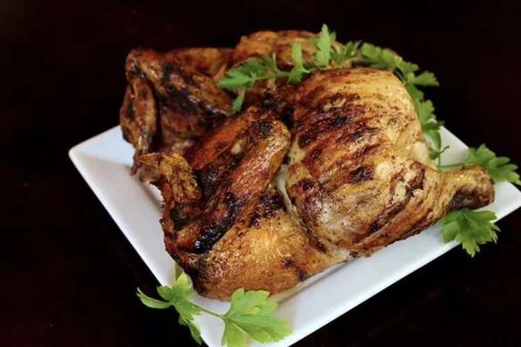

Chicken

Description
Intimidated by the idea of making a rotisserie chicken at home? We're here to help. Get your grill and
rotisserie attachment ready — you'll want to try this recipe ASAP.
Ingredients
- Whole Chicken
- Butter
- Seasonings
Steps
- Place the chicken, breast-side up, on a cutting board.
- Pull one of the legs away from the body and slice through the meat until the hip bone is exposed. Then, pull
the leg harder until the leg is detached.
- Use your knife to separate the drumstick and thigh.
- Pull the wing tip away from the breast until you can easily cut through the joint.
- Slice one of the breasts away from the breastbone. Repeat with the other breast.